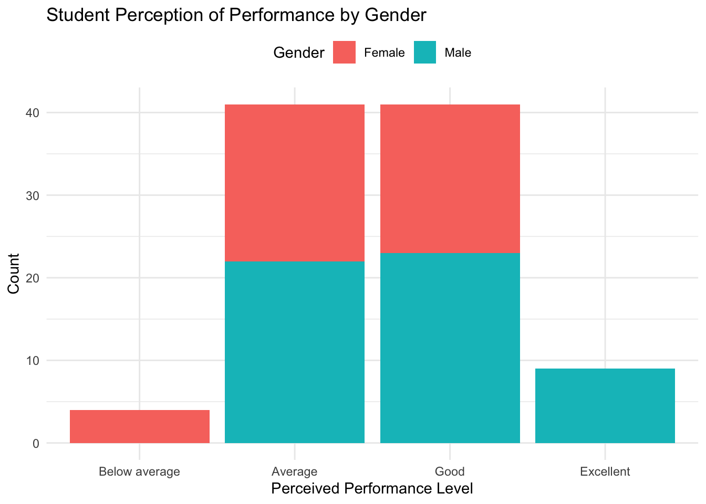
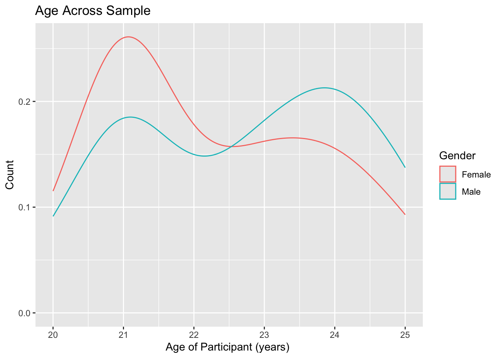
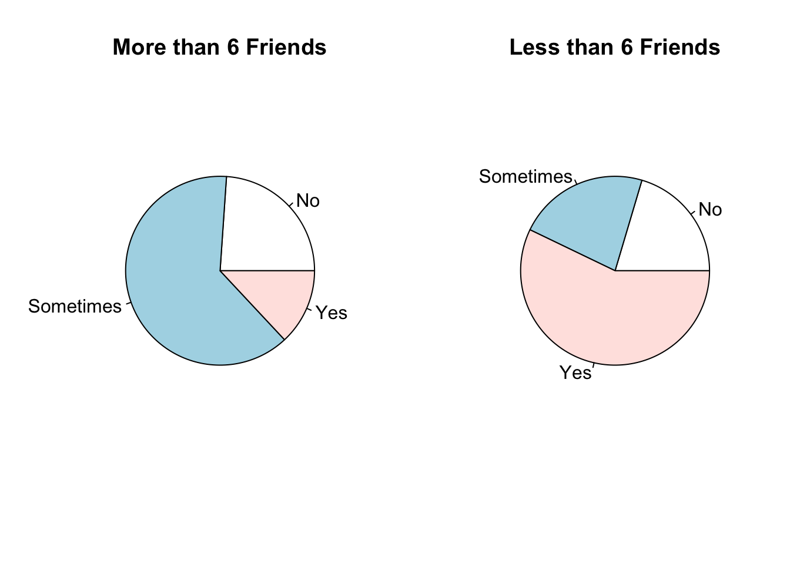
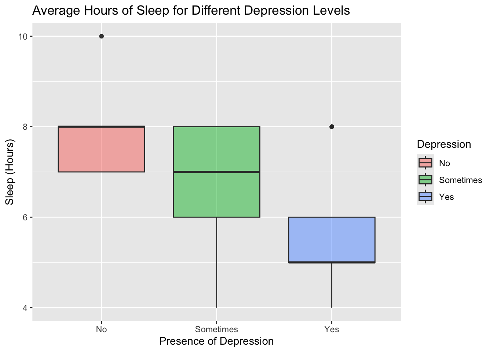

Code
library(tidyverse)
library(stringr)
library(ggplot2)
library(here)
library(kableExtra)
library(gt)
library(plotly)
library(here)
library(ggpubr)This data, titled “Psychosocial Dimensions of Student Life,” includes the survey resutls from 100 computer science students surrounding their lifestyles and mental health. This analysis uses data surrounding their lifestyle and social life to determine any correlations between mental health and self-care behaviors through data analysis. I was specifically interested in understanding how different elements of student life impacted perceived performance and depression levels. This analysis can be used to explore how to improve student health in STEM heavy fields and recognize the barriers to performance introduced by gender, depression, stress/sleep, and age.
Core Questions
The first step was setting up the necessary packages for analysis.
library(tidyverse)
library(stringr)
library(ggplot2)
library(here)
library(kableExtra)
library(gt)
library(plotly)
library(here)
library(ggpubr)In this step, I imported the csv file with the survey responses and moved the file into my directory that was relative to my project, not the local computer directory.
here :: i_am ("analysis/hp2-nadiasharapova.qmd")here() starts at /Users/nadiasharapova/Ling 343/Git/mysited_raw <- read.csv(here("data/CSE_student_performances.csv"),
col.names = c("Age", "Gender", "Performance", "Notes", "Depression", "Challenges", "Presentations", "Sleep", "Friends", "New"))
d <- d_raw
.libPaths()[1] "/Library/Frameworks/R.framework/Versions/4.3-arm64/Resources/library"The data below provides insight into the variables used in my analysis.
| Variable | Meaning |
|---|---|
| Age | Represents the age of the individuals in the dataset, providing insight into the age distribution of the study. Response Type: Year |
| Gender | Indicates the gender of each individual, allowing for the exploration of gender-related patterns and trends within the dataset. This only includes male/female, which does not represent the full gender spectrum and may limit data analysis. Response Type: Either Male/Female |
| Performance | Reflects the academic achievements of individuals. Response Type: Below Average -> Average -> Good -> Excellent |
| Notes | Describes about individuals take notes during class, providing insights into study habits and engagement during lectures. Response Type: No/Sometimes/Yes |
| Depression | Indicates the presence or absence of depressive symptoms, contributing valuable information about the mental health of individuals in the dataset. Response Type: No/Sometimes/Yes |
| Challenges | Explores whether individuals encounter challenges in completing academic tasks. Response Type: No/Sometimes/Yes |
| Presentations | Reflects individuals’ preferences for presentations, offering insights into their learning style and engagement with visual or oral communication. This aim also measures if they are extroverted or introverted. Response Type: Yes/No |
| Sleep | Represents the average hours of sleep individuals get per day, providing information on sleep patterns and potential correlations with academic performance. Response Type: Hours of Sleep |
| Friends | Quantifies the social aspect by indicating the number of friends each individual has, contributing to the understanding of social dynamics within the dataset. Response Type: Number of Friends |
| New | Explores individuals’ receptiveness to new experiences or concepts, offering insights into their adaptability and openness to innovation. Response Type: Yes/No |
To analyze my data, I converted the survey data into ordered factors and set the levels. I also added a column with a participant id in case I opted to analyze individual participants.
d$Performance <- factor(d$Performance, ordered= TRUE,
levels= c("Below average", "Average", "Good", "Excellent"))
d$Notes <- factor(d$Notes, levels= c("No", "Sometimes", "Yes"))
d$Depression <- factor(d$Depression, levels= c("No", "Sometimes", "Yes"))
d$Challenges<- factor(d$Challenges, levels= c("No", "Sometimes", "Yes"))
d$New <- factor(d$New, levels= c("No", "Yes"))
d$Presentations <- factor(d$Presentations, levels= c("No", "Yes"))
d$Gender <- factor(d$Gender, levels= c("Female", "Male"))
d <- d %>%
mutate(participant_id = row_number())
d <- na.omit(d)One of the most interesting aspects of this data set is seeing how gender impacts perceived performance in computer science. I first subset by data and after counting how they perceived their performance by gender, I noticed that women were the only ones who perceived their performance as ‘below average’ while men were the only ones who perceived their performance as ‘excellent.’
I then wanted to see if there was a relationship between the two variables using a chi-squared test. I created a new dataframe where I changed the performance into a numeric ranking for analysis, though it was still a discrete variable. I then ran a chi-squared test and got a p-value of .006482, which was less than .05. This means that we must reject our null hypothesis (which was that there was no statistically significant relationship between gender and perceived performance). These results imply there is a correlation between gender and how they perceive their performance.
d %>%
count(Gender, sort=TRUE) Gender n
1 Male 54
2 Female 41ggplot(d, aes(Performance))+
geom_bar(aes(fill=Gender)) +
labs(title = "Student Perception of Performance by Gender",
x = "Perceived Performance Level",
y = "Count") +
theme_minimal() +
theme(legend.position = "top")
ranking <- c("Below average" = "1", "Average" = "2", "Good" = "3", "Excellent" = "4")
d_numeric <- d %>%
mutate_at(vars(3), ~str_replace_all(., ranking) %>%
as.numeric())
g_perf2 <-table(d_numeric$Gender, d_numeric$Performance)
suppressWarnings(chisq.test(g_perf2, correct=FALSE)$expected)
1 2 3 4
Female 1.726316 17.69474 17.69474 3.884211
Male 2.273684 23.30526 23.30526 5.115789suppressWarnings(chisq.test(g_perf2, correct= FALSE))
Pearson's Chi-squared test
data: g_perf2
X-squared = 12.28, df = 3, p-value = 0.006482After looking into this data further, I wanted to evaluate and understand how age impacts different behavior frequencies in college. I created a new dataframe from my numeric data frame and selected the Age, Gender, Performance, Notes, Challenges, Presentations, and New variables. The behavior frequencies were calculated by converting the survey responses into numerical data where performance was evaluated as “Below average” = “1”, “Average” = “2”, “Good” = “3”, and “Excellent” = “4”. The variables for behavior frequencies (the Notes, Challenges, Presentations, and New variables) were calculated as “No” = “1”, “Sometimes” = “2”, “Yes” = “3”. This way, I could numerically understand the frequencies of certain behaviors.
I then pivoted my data to show the frequencies of all of the behaviors together and then plotted the data. The figure below shows the frequencies of certain behaviors as well as the perceived levels of performance as the student aged. We can see mixed results, with older students having a lower perception of their performance as they age. The New variable also significantly decreased while the Presentation variable increased. Lastly, the Notes variable also appeared to decrease. Considering that the sample evaluated undergraduate students, it may be that older students, or those above the average age of 22.53, may have struggles that impact their performance and extended their undergraduate career. However, the reasons behind this shift are not able to be confidently evaluated in this study.
freq <- c("No" = "1", "Sometimes" = "2", "Yes" = "3")
d_numeric <- d_numeric %>%
mutate_at(vars(4:7, 10), ~str_replace_all(., freq) %>%
as.numeric())
df_behaviors <- d_numeric[, c(1,2,3, 4, 6, 7, 10)]
df_beh_longer <- pivot_longer(df_behaviors,
cols= c(3, 4, 5, 6, 7),
names_to = "Behavior",
values_to= "Frequency")
ggplot(
data = df_beh_longer,
mapping = aes(x = Age, y= Frequency, color= Behavior)
) +
geom_smooth(method= "lm") +
labs(
title = "Age and Self-Reported Behavior Frequencies",
x = "Age of Participant (years) ", y = "Behavior Frequencies",
color = "Behavior"
)`geom_smooth()` using formula = 'y ~ x'
print(df_beh_longer %>%
summarize(mean = mean(Age, na.rm = TRUE)))# A tibble: 1 × 1
mean
<dbl>
1 22.5ggplot(d, aes(x=Age, color=Gender))+
geom_density(alpha=.5) +
labs(
title = "Age Across Sample",
x = "Age of Participant (years) ", y = "Count",
color = "Gender"
)
To understand how to better alleviate student depression, I wanted to evaluate how the number of friendships impacted the reported levels of depression. I opted to subset the data into two dataframes for those with more than the median number of friends (6) and those with less than the median number of friends. In the figure below, we see that those with more than 6 friends had a significantly proportion of people reporting depression only sometimes or not at all. Those with less than 6 friends reported more consistent depression and were less likely to have depression only sometimes. However, both groups had a higher percentage of people who had depression at least sometimes than not at all. This data demonstrates that friendship likely has an impact on reducing depression levels.
#isolated data surrounding friendship for analysis
df_friends <- data.frame(d[c("Age", "Gender", "Friends", "participant_id")])
print(df_friends %>%
summarize(median = median(Friends, na.rm = TRUE))) median
1 6#created new dataframes containing data surrounding those with friendships above and below median number of friends
df_social<- df_friends %>%
filter(df_friends$Friends>6)
df_join_social <- df_social %>%
left_join(d, join_by(participant_id))
df_unsocial <-d %>%
anti_join(df_join_social, join_by(participant_id))
#summarized data surrounding depression levels for the two groups
summ_social <-df_join_social %>%
count(Depression, sort= TRUE)
summ_unsocial<- df_unsocial %>%
count(Depression, sort=TRUE)
#set plotting area into 1*2 array to graph pie charts together for comparison
labels1 <- c("No", "Sometimes", "Yes")
labels2 <- c("Yes", "Sometimes", "No")
par(mfrow=c(1,2))
pie(table(df_join_social$Depression), labels1, main= "More than 6 Friends")
pie(table(df_unsocial$Depression), main= "Less than 6 Friends")
The next element of student life I wanted to explore was seeing how sleep and depression relate and play off of eachother. I first made a new dataframe with just sleep and depression and made a boxplot that showed the average sleep (in hours) for people with different levesl of depression. On average, it seems as though people with higher depression get less sleep than those without the presence of depression. People with no depression got (an average) 7.95 hours of sleep while those with the presence of depression had (on average 5.62 hours of sleep.
I then performed a one way ANOVA test to determine if there was a relationship and found a pval of 8.91e-09, which is less than a pval of .05. This means we must reject the null (which is that there is not relationship between the two values) and state that there is a correlation between the number of hours of sleep you get and your depression levels.
ggplot(d, aes(x=Depression, y= Sleep, fill=Depression))+
geom_boxplot(alpha=.5)+
labs(title= "Average Hours of Sleep for Different Depression Levels", x= "Presence of Depression", y= "Sleep (Hours)")+
theme(legend.position="right")
df_sleep <- d_numeric[, c(3,4,5, 6, 7, 8)]
df_sleep <- df_sleep %>%
group_by(Depression)
summary_sleep <- df_sleep%>%
group_by(Depression) %>%
summarize(
Mean_Sleep= mean(Sleep),
Min_Sleep= min(Sleep),
Max_Sleep=max(Sleep)
)
print(summary_sleep)# A tibble: 3 × 4
Depression Mean_Sleep Min_Sleep Max_Sleep
<dbl> <dbl> <int> <int>
1 1 7.95 7 10
2 2 6.72 4 8
3 3 5.62 4 8one.way <- aov(Sleep ~ Depression, data= d_numeric)
summary(one.way) Df Sum Sq Mean Sq F value Pr(>F)
Depression 1 71.76 71.76 39.95 8.91e-09 ***
Residuals 93 167.04 1.80
---
Signif. codes: 0 '***' 0.001 '**' 0.01 '*' 0.05 '.' 0.1 ' ' 1My analysis of the dataset “Psychosocial Dimensions of Student Life,” reveals several key insights into how students are impacted by social barriers and mental health. In Computer Science, a STEM heavy field, we can see that students who face mental health struggles, older students, and women struggle with their perceptions of their performance. My data also shows that sleep and friendships have a significant impact on depression levels. This data implies that investing into services that include gender-based disparities and work to include older students is necessary. My data also supports the idea of investing further into helping students with mental struggles create healthier habits like sleep and friendships to address mental health struggles.